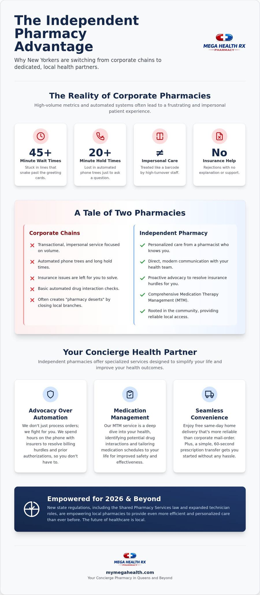

How many hours of your life have you lost to a corporate pharmacy's hold music or a line that stretches past the greeting card aisle? It's a common New York story. You wait. You're ignored. You're told your insurance was rejected with no explanation. We understand the frustration of being treated like a barcode rather than a neighbor. You deserve a partner, not just a pill provider. Switching to an independent pharmacy nyc isn't just a nostalgic choice; it's a strategic upgrade for your health and your schedule.
You already know that big chains feel cold and clinical. You've likely felt the sting of impersonal service when you needed help the most. We'll show you why thousands of New Yorkers are ditching the chains for faster fulfillment and proactive advocacy. New 2026 regulations, including the Shared Pharmacy Services law and expanded technician roles, have empowered local pharmacies to be more efficient than ever. This guide breaks down how direct communication, insurance support, and free home delivery can simplify your life. It's time to experience healthcare that actually moves at the speed of the city.
Key Takeaways
- Escape the frustration of 45-minute wait times. Learn how streamlined service models save hours for busy New Yorkers.
- Discover how an independent pharmacy nyc acts as a dedicated health advocate by resolving complex insurance hurdles.
- Compare the reliability of free same-day delivery against the common delays of corporate mail-order systems.
- Learn the simple steps to complete a prescription transfer in about sixty seconds without any bureaucratic headaches.
- Explore 2026 regulatory shifts that empower local pharmacists to provide more efficient, personalized care than ever before.
Table of Contents
- The State of NYC Pharmacies: Why the "Chain Fatigue" is Real
- Advocacy Over Automation: The Independent Pharmacy Advantage
- Independent vs. Chain Pharmacies: A 2026 Comparison
- How to Transfer Your Prescription in NYC (It Takes 1 Minute)
- Mega Health Rx: Your Concierge Pharmacy in Queens and Beyond
The State of NYC Pharmacies: Why the "Chain Fatigue" is Real
The line starts near the refrigerated drinks and snakes past the greeting cards. If you live in Manhattan or Queens, you've seen it. It's the 45-minute wait for a prescription that was supposed to be ready yesterday. This is the current reality of The State of NYC Pharmacies within the corporate world. Big box stores promise efficiency but often deliver a bottleneck. You're met with automated phone trees that lead nowhere. You listen to hold music for twenty minutes just to ask a simple question. For anyone with complex health needs, this "big box" efficiency is a total myth. It's a system designed for shareholders, not for patients. We understand the exhaustion that comes with being just another number in a spreadsheet. You deserve better than a line that never moves.
The Problem with Impersonal Corporate Care
Corporate pharmacies operate on high-volume metrics. This pressure often forces pharmacists to prioritize speed over safety. You've likely noticed the high turnover. Every time you visit, there's a new face behind the counter. They don't know your medical history. They don't know your family. This lack of continuity is more than just annoying; it's a safety risk. There's also a significant conflict of interest to consider. When a major national insurer owns the pharmacy chain, your choices are often restricted by their bottom line rather than your health needs. They steer you toward their own mail-order services that lack personal oversight. Choosing an independent pharmacy nyc breaks this cycle. It replaces a cold, clinical transaction with a supportive health partnership. You get a dedicated advocate who actually remembers your name and your specific health goals.
NYC Pharmacy Deserts and Access Gaps
Local neighborhoods are feeling the squeeze. Corporate downsizing has created "pharmacy deserts" across the boroughs. When a major national chain closes a branch to cut costs, residents are forced to travel miles for essential medications. This isn't just an inconvenience. For seniors or those with limited mobility, it's a major barrier to care. Staffing shortages in these remaining hubs lead to prescription errors and longer delays. It's a cycle of neglect. An independent pharmacy nyc often fills these gaps by staying rooted in the community while the giants retreat. They provide the reliability and local presence that corporate models are currently abandoning. They act as the concierge guide for patients who have been left behind by the big box retreat. They handle the heavy lifting so you don't have to. You shouldn't have to cross three neighborhoods just to pick up a refill.
Advocacy Over Automation: The Independent Pharmacy Advantage
Automation is great for factories. It's terrible for healthcare. When you use a corporate chain, you're often interacting with an algorithm rather than a person. If your insurance denies a claim, the computer simply says "no" and the clerk moves to the next person in line. That's where the "Advocate Pharmacist" comes in. An independent pharmacy nyc doesn't just process orders. We fight for you. We spend hours on the phone with insurers to resolve billing hurdles and prior authorizations. This type of advocacy from the NCPA ensures that local pharmacists can prioritize patient care over corporate profit. We do the heavy lifting. You get the relief you deserve without the bureaucratic headache.
Insurance billing is a complex maze. Chains often give up the moment a hurdle appears. They tell you to call your doctor or handle it yourself. We take a different approach. We coordinate directly between your physician and your insurance provider to ensure your coverage is maximized. This proactive problem-solving is the heart of our service. We aim to lower your stress levels by handling the paperwork and technical logistics. You should focus on your recovery. We'll focus on the administrative mess.
Medication Therapy Management (MTM) Explained
Medication Therapy Management (MTM) is a clinical service that optimizes drug therapy through a comprehensive review of a patient's medications. It's a deep dive into your health. Automated systems check for basic clashes, but they miss the subtle nuances of long-term care. A personal review identifies dangerous drug interactions that could lead to an emergency room visit. For seniors or those managing chronic conditions, this is life-saving work. We tailor your medication schedules to your specific daily routine. It's about making your treatment plan work for your life, not against it.
Direct Access and Modern Communication
Forget the endless phone trees. You don't have time to listen carefully because the menu options have changed again. Modern health care should be as fast as a text message. We've replaced the hold music with direct-to-pharmacist texting. This direct line of communication drastically reduces medication anxiety. If you have a question about a new prescription at mid-day, you get a real answer from a real person. It's efficient. It's direct. We also offer in-person support like blood pressure and sugar screenings. This concierge approach turns a clinical chore into a supportive experience. If you're ready for a pharmacist who actually has your back, it's time to experience the independent difference. Choosing an independent pharmacy nyc means choosing a partner who understands the local landscape and your personal health goals.
Independent vs. Chain Pharmacies: A 2026 Comparison
Choosing an independent pharmacy nyc isn't just about avoiding a long line. It's about how you value your time and your health. In 2026, the gap between local care and corporate chains has widened significantly. Chains prioritize volume and shareholder returns. We prioritize you. When you spend your healthcare dollars at a local pharmacy, that money stays in your neighborhood. It supports local jobs and community health initiatives across the five boroughs. Corporate chains send that profit to distant headquarters. This choice has a direct ripple effect on the economic health of your community. It's the difference between being a customer and being a neighbor.
Speed and Delivery Logistics
The difference in fulfillment speed is staggering. A chain might tell you a prescription will be ready in a few hours, or they might push you toward 3-5 day mail-order shipping. We don't think you should wait days for relief. We provide free same-day NYC delivery. This is crucial for temperature-sensitive medications like insulin or certain biologics. Mail-order packages often sit in hot delivery trucks or freezing sorting facilities for days. Local delivery ensures your meds travel directly from our climate-controlled shelf to your front door. We also handle urgent needs like rapid flu and COVID testing immediately. There's no "next available appointment" three days away. We fulfill your needs in minutes, not hours. It's fast. It's reliable. It's built for the pace of New York.
The "Insurance Advocacy" Factor
Who actually calls your doctor when there's a prior authorization issue? At a big chain, the answer is usually "no one." They often reject complex insurance issues because resolving them takes too much time. They'd rather move to the next person in line. This lack of support is why independent pharmacies consistently earn top ratings from Consumer Reports. We navigate the specifics of the OTC Network and Medicare logistics every day. If there's an error on your script, we don't make you fix it. We call your provider ourselves. We handle the heavy lifting of insurance billing so you don't have to. You get the medication you need without the administrative headache. This level of service is why thousands are switching to an independent pharmacy nyc. It's healthcare that actually works for you.

How to Transfer Your Prescription in NYC (It Takes 1 Minute)
Many New Yorkers stick with a frustrating corporate chain because they think switching is a bureaucratic nightmare. They imagine hours of paperwork, awkward phone calls, and endless hold music. This is a total myth. We understand that your time is your most valuable asset. Switching to an independent pharmacy nyc is actually one of the fastest, most effective things you can do for your health. We've designed the process to be entirely hands-off for you. You provide the basics; we handle the heavy lifting. It's a "One-Minute Transfer" that shifts the burden from your shoulders to ours. You deserve a partner who values your schedule as much as your wellness.
The fear of a "gap" in medication often keeps people trapped in impersonal systems. You might worry that your records will get lost or your insurance will be rejected during the move. We act as your concierge guide to prevent these issues. Our team is organized and tech-savvy. We move quickly from identifying your needs to providing a solution. This isn't just about moving a file; it's about upgrading your entire healthcare experience to something more modern and community-oriented.
The 3-Step Transfer Process
We've streamlined the onboarding process into three simple, sequential steps that guide you forward. First, you provide your name, date of birth, and the name of your current pharmacy. Second, you list the medications you want to move. You don't even need to have the prescription numbers on hand; we can find them. Third, you choose your delivery or pickup preference. That's the extent of your involvement. You don't need to call your old pharmacy to "break up" with them or explain why you're leaving. We initiate the contact and manage the transition. It's a smooth, guided transition from complication to simplicity.
What Happens Behind the Scenes?
Once you give us the green light, our team starts moving immediately. New York law requires a pharmacist-to-pharmacist transfer for most prescriptions. We contact the old chain and secure your records directly. Your insurance information and refill history move with the script automatically. We verify everything for accuracy and set up your first fulfillment. This proactive responsibility ensures that nothing falls through the cracks. We even establish automated reminders via direct text so you never run out again. We take pride in handling the administrative mess so you can focus on feeling better. If you're tired of the corporate shuffle, start your 1-minute transfer today and experience the difference of a dedicated advocate. Choosing an independent pharmacy nyc means choosing a team that actually has your back.
Mega Health Rx: Your Concierge Pharmacy in Queens and Beyond
We aren't just a shop on the corner. Mega Health Rx is a Forest Hills-based independent pharmacy nyc that treats the entire city like our local neighborhood. We understand the unique pressures of living in the five boroughs. You need speed. You need accuracy. Most of all, you need a professional who actually picks up the phone. We've built our reputation on being a proactive problem-solver for New Yorkers who are tired of the cold, clinical chain experience. We handle the heavy lifting. You get the relief. It's a modern, community-oriented approach that puts your health first.
Our roots are in Queens, but our reach extends city-wide. We've combined the warmth of a personalized boutique experience with the efficiency of a high-tech health hub. This means you don't have to choose between personal service and professional expertise. We act as your dedicated advocate, bridging the gap between complex insurance systems and your daily well-being. Whether you're transferring a script or picking up medical supplies, we prioritize your ease and directness.
Comprehensive 5-Borough Delivery
Distance shouldn't be a barrier to quality care. Whether you're in the Bronx, Brooklyn, Manhattan, or Staten Island, we bring the pharmacy to your doorstep. We offer free same-day delivery to all five boroughs. This isn't a vague promise; it's a logistical standard. Our "Text-to-Deliver" system provides real-time updates so you aren't left wondering when your meds will arrive. This is especially vital for homebound or senior patients who rely on consistent, reliable access to their prescriptions. We've replaced the uncertainty of corporate mail-order with a streamlined, city-wide network. It's fast. It's direct. It's built for the pace of your life.
More Than Just Prescriptions
A great independent pharmacy nyc should be a community hub, not just a counter for pills. We've expanded our services to meet the diverse needs of our neighbors. Need a DMV vision test for your 2026 renewal? We're certified to handle it on the spot. Looking for a notary public or a place to handle utility bill payments? We've got you covered. We also stock a full range of medical supplies, from walkers and mobility aids to diabetic monitoring equipment. If it's essential for your health, we likely have it on the shelf.
Prevention is just as important as treatment. We offer walk-in vaccinations for Flu, COVID-19, Shingles, and RSV. No appointments. No long lines. Just professional care delivered with a sense of quiet confidence. We even accept OTC Network benefit cards to help you maximize your insurance perks. It's modern healthcare with the heart of a reliable, local neighbor.
Take Control of Your Healthcare Experience
The era of accepting 45-minute wait times and automated phone trees is over. You've seen how a dedicated health advocate can resolve insurance hurdles and provide clinical oversight that algorithms simply miss. Choosing an independent pharmacy nyc means reclaiming your time and ensuring your care is handled with precision. It's a shift from being a barcode to being a neighbor. You deserve a partner who understands the local landscape and fights for your health.
Mega Health Rx has been a Forest Hills community staple since 2024, but our mission extends city-wide. We've replaced corporate coldness with free same-day delivery to all 5 boroughs and a direct text line to our pharmacists. We handle the paperwork, the insurance calls, and the delivery logistics so you don't have to. Transfer your prescription to Mega Health Rx in 60 seconds and start experiencing healthcare that actually supports your life. You deserve a partner who values your wellness as much as your schedule. We're ready to start the heavy lifting for you today.
Frequently Asked Questions
How do I transfer my prescription to an independent pharmacy?
You can initiate a transfer in about sixty seconds by providing basic identifiers like your name, date of birth, and current pharmacy location. We handle the heavy lifting by coordinating with your previous provider to migrate your records and refill history. There's no need for you to wait on hold or fill out stacks of paperwork. Choosing an independent pharmacy nyc means your transition is managed by professionals who prioritize your continuity of care.
Are independent pharmacies more expensive than big box chains?
No, your copay is typically identical to what you would pay at a national corporate chain. Prescription pricing is dictated by your specific insurance plan and formulary, not the size of the pharmacy building. We act as your advocate to ensure you are receiving the most cost-effective version of your medication. We often identify savings opportunities and manufacturer coupons that high-volume corporate systems overlook while rushing through their daily quotas.
Does Mega Health Rx offer free delivery in all of NYC?
Yes, we provide free same-day delivery to all five boroughs of New York City. We understand that navigating the city for a prescription is a major burden, especially for those managing chronic conditions or recovering from surgery. Our team coordinates local couriers to ensure your medication arrives safely at your doorstep. You don't have to worry about the shipping delays or temperature risks often associated with national mail-order pharmacy services.
Do independent pharmacies accept my insurance and Medicare?
We accept the vast majority of commercial insurance plans, Medicare Part D, and Medicaid. Our team is highly experienced in navigating the complexities of the New York healthcare landscape. If your plan requires a prior authorization, we don't just tell you to call your doctor. We initiate the process ourselves and follow up with your provider until the issue is resolved. We take pride in handling the administrative mess for you.
Can I talk to a pharmacist directly at Mega Health Rx?
Yes, you have immediate access to our pharmacists without navigating a complex automated phone tree. Mega Health Rx offers a direct text line that connects you with a real person in our Forest Hills office. This concierge approach eliminates the anxiety of waiting for a callback from a distant corporate call center. Whether you have a question about a new dosage or a potential side effect, you get an expert answer in real-time.
What medical supplies can I buy at a local Queens pharmacy?
Our local Queens pharmacy stocks a comprehensive range of medical equipment designed for professional home care. This includes orthopedic supports, nebulizers, surgical dressings, and bathroom safety aids. We go beyond basic retail items to provide the clinical-grade tools you need for a safe recovery. If you require a specific item that isn't currently on the shelf, our team can often source it quickly through our network of local medical suppliers.
How long does it take to get a prescription filled at an independent pharmacy?
Standard prescription fulfillment at an independent pharmacy nyc usually takes less than ten minutes. We prioritize accuracy and speed because we know you have a busy New York schedule. Unlike national chains that may have backlogs spanning several days, our streamlined workflow allows us to focus on every patient individually. You can walk in or schedule a pickup knowing that your medication will be ready and checked when you arrive.
Do you accept OTC Network benefit cards for medical supplies?
Yes, we are fully equipped to process OTC Network benefit cards for eligible health supplies and monitoring equipment. Many Medicare Advantage and commercial plans provide these credits, but finding a pharmacy that accepts them can be difficult. We make it easy for you to use your benefits for vitamins, blood pressure monitors, and other wellness essentials. Our staff will help you identify which items in our shop are covered by your specific plan.
Switch in about a minute
Tell us your ZIP code, where you fill now, and what you take. We make every phone call from there. Free delivery anywhere in NYC.